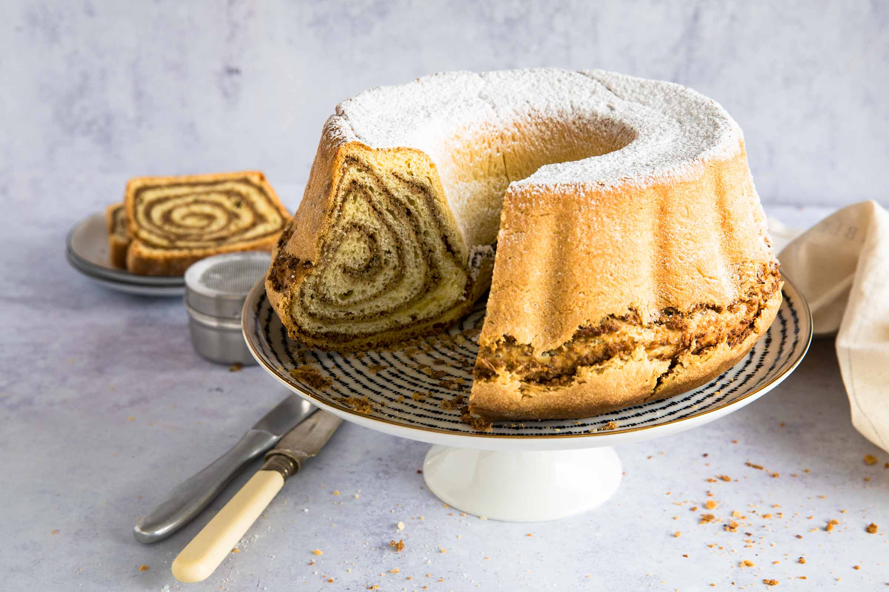

Potica

Description
Potica (pronounced po-teet-sah), is a Slovenian nut roll that is traditionally made for Easter and Christmas. But it’s a wonderful treat, any time of the year.
Ingredients
- 1 kg flour
- 30g yeast
- 3-4 egg yolks
- 300ml lukewarm milk
- 120g butter
- 1 teaspoon of salt
- 2 tablespoons of sugar
- fat for the mould
- 600-700 g of walnuts
- 200g honey
- 50g sugar
- 100-200ml milk
- 1 egg
- cinnamon
- small amount of rum or home brandy
Steps
- Prepare the dough in warm surroundings. Add a teaspoon of salt to the flour, and mix the yeast with a teaspoon of sugar, 2 tablespoons of flour and 50ml of lukewarm water or milk. Leave to rise in warm surroundings.
- Make a small hole in the middle of the flour, pour in the beaten eggs, yeast mix, melted butter and sugar. Keep adding the lukewarm milk as you whisk. Whisk for 15 minutes or until you see bubbles and the dough gets separated from the bowl. Sprinkle the dough with flour, cover with a napkin and leave it to rise in warm surroundings.
- For the filling, roast crushed or minced walnuts with milk and sugar. Heat the honey so it liquifies. Add it to the walnuts and add cinnamon. Leave the filling to cool down, then add another egg or two and gently mix them in.
- Roll out the dough until it is 1/2cm thick and coat it with the warm filling. Roll it tightly and place it in the baking tray. Leave the Potica to rise slowly. It will rise somewhat in the oven as well. Before baking, coat the Potica with a beaten egg.
- Bake for one hour, then leave it to cool in the mould for another 15 minutes. Finally, sprinkle with sugar if you wish.